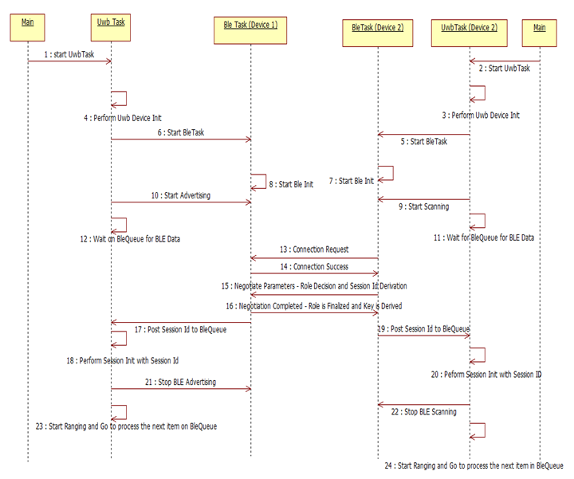
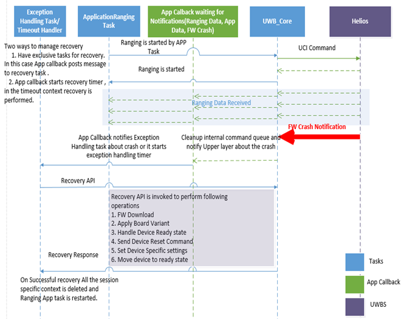

1.6. Dynamic View¶
1.6.1. UWB Stack Init Sequence¶
As a part of UWB Stack Init following things are done.
All required tasks are created and initialized.
Transport layer initialization.
HBCI FW download is done to initialize Helios.
Board variant is set as per Host setup.
All default configs are applied.
1.6.2. UWB Stack DeInit Sequence¶
As a part of UWB Stack DeInit following things are done.
Check if there are any active sessions created.
If active session count is more than Zero, de-initialize all active sessions.
MW stack de-init and memory cleanup.
1.6.3. P2P, Multicast Ranging¶
As a part of P2P, Multicast ranging following operations are performed.
Before starting ranging UWB Stack should be in initialized state.
Below sequence is same for initiator and responder:
Session is created for Ranging with 4 bytes unique session ID and session type
0x00Same session ID should be used by both Initiator and responder.
All default session configs are applied at the time of session creation.
Application specific ranging configs are applied.
Ranging is started.
At the end ranging is stopped and session is de-initialized.
1.6.4. BLE - OOB¶
An out of the bounds setup for ranging with BLE would use the following sequence.
1.6.5. Recovery : UCI Command Timeout¶
Following steps are performed from MW to handle UCI command timeout
API is invoked from Application Task, UCI command is sent to Helios as apart of API
If response is not received command retry is attempted. If response is not received for the second time as well UCI Timeout status is notified to upper layers.
API gets unblocked with status UCI timeout. Same status is returned to Application.
Applications post message to Exception handling task or start recovery timer.
Application tasks waits for recovery.
Exception handling task/ or in the context of timeout, Recovery API is invoked. Recovery API performs certain operations are shown in the flow diagram.
After recovery All session state context is deleted, and application task is restarted.
1.6.6. Recovery : FW Crash Handling from MW¶
Following steps are performed from MW to handle FW Crash
During active ranging session FW can be crashed.
FW Crash notification is sent to upper layers. (App callback)
App callback posts message to Exception handling task or starts recovery timer.
Application tasks waits for recovery.
Exception handling tasks/ or in the context of timeout Recovery API is invoked. Recovery API performs certain operations are shown in the flow diagram.
After recovery All session state context is deleted, and application task is restarted
